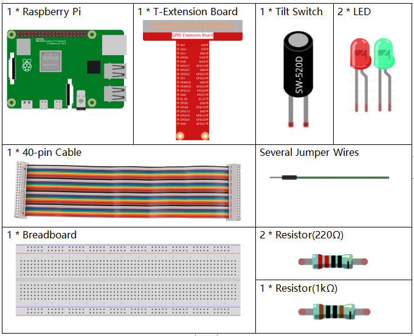

Note
Bonjour, bienvenue dans la communauté des passionnés de SunFounder Raspberry Pi, Arduino et ESP32 sur Facebook ! Plongez dans l’univers du Raspberry Pi, Arduino et ESP32 avec d’autres enthousiastes.
Pourquoi nous rejoindre ?
Support d’experts : Résolvez les problèmes après-vente et relevez les défis techniques avec l’aide de notre communauté et de notre équipe.
Apprendre & Partager : Échangez des conseils et des tutoriels pour perfectionner vos compétences.
Aperçus exclusifs : Profitez d’un accès anticipé aux nouvelles annonces de produits et aux avant-premières.
Réductions spéciales : Bénéficiez de réductions exclusives sur nos produits les plus récents.
Promotions festives et cadeaux : Participez à des concours et à des promotions spéciales lors des fêtes.
👉 Prêt à explorer et à créer avec nous ? Cliquez sur [Ici] pour nous rejoindre dès aujourd’hui !
2.1.3 Interrupteur à bascule
Introduction
Il s’agit d’un interrupteur à bascule à bille avec une petite bille en métal à l’intérieur. Il est utilisé pour détecter les inclinaisons de faible angle.
Composants nécessaires
Pour ce projet, nous aurons besoin des composants suivants.
Schéma de circuit


Procédure expérimentale
Étape 1 : Montez le circuit.

Étape 2 : Accédez au dossier du code.
cd ~/davinci-kit-for-raspberry-pi/python-pi5
Étape 3 : Exécutez le code.
sudo python3 2.1.3_Tilt.py
Placez l’interrupteur à la verticale, la LED verte s’allumera. Si vous l’inclinez, « Tilt! » s’affichera sur l’écran et la LED rouge s’allumera. Replacez-le à la verticale, et la LED verte se rallumera.
Avertissement
En cas d’erreur RuntimeError: Cannot determine SOC peripheral base address, veuillez consulter Si gpiozero ne fonctionne pas..
Code
Note
Vous pouvez Modifier/Réinitialiser/Copier/Exécuter/Arrêter le code ci-dessous. Mais avant cela, assurez-vous de vous rendre dans le répertoire source, tel que davinci-kit-for-raspberry-pi/python-pi5. Après modification, vous pouvez exécuter le code pour observer le résultat.
#!/usr/bin/env python3
from gpiozero import LED, Button # Importation des classes LED et Button
# Initialisation du détecteur d'inclinaison et des LEDs avec GPIO Zero
TiltPin = Button(17, pull_up=False) # Capteur d'inclinaison connecté à la broche GPIO 17, sans résistance pull-up
green_led = LED(27) # LED verte connectée à la broche GPIO 27
red_led = LED(22) # LED rouge connectée à la broche GPIO 22
def detect():
"""
Detect the tilt sensor state and control the LEDs.
Turns on the red LED and turns off the green LED when tilted.
Turns off the red LED and turns on the green LED when not tilted.
"""
if TiltPin.is_pressed: # Vérifier si le capteur est incliné
print(' *************')
print(' * Tilt! *')
print(' *************')
red_led.on() # Allumer la LED rouge
green_led.off() # Éteindre la LED verte
else: # Si le capteur n'est pas incliné
red_led.off() # Éteindre la LED rouge
green_led.on() # Allumer la LED verte
try:
while True:
# Vérifier continuellement l'état du capteur d'inclinaison et mettre à jour les LEDs
TiltPin.when_pressed = detect
TiltPin.when_released = detect
except KeyboardInterrupt:
# Gérer une interruption clavier (Ctrl+C) pour sortir proprement de la boucle
pass
Explication du code
Cette ligne définit le script pour être exécuté avec Python 3 et importe les classes
LEDetButtondegpiozeropour contrôler les périphériques GPIO.#!/usr/bin/env python3 from gpiozero import LED, Button # Importation des classes LED et Button
Initialise le capteur d’inclinaison connecté à la broche GPIO 17 (avec résistance pull-up désactivée) et deux LEDs connectées aux broches GPIO 27 et 22.
# Initialisation du détecteur d'inclinaison et des LEDs avec GPIO Zero TiltPin = Button(17, pull_up=False) # Capteur d'inclinaison connecté à la broche GPIO 17, sans résistance pull-up green_led = LED(27) # LED verte connectée à la broche GPIO 27 red_led = LED(22) # LED rouge connectée à la broche GPIO 22
Définit la fonction
detect, qui vérifie l’état du capteur d’inclinaison. Si incliné, elle allume la LED rouge et éteint la LED verte. Si non incliné, elle fait l’inverse.def detect(): """ Detect the tilt sensor state and control the LEDs. Turns on the red LED and turns off the green LED when tilted. Turns off the red LED and turns on the green LED when not tilted. """ if TiltPin.is_pressed: # Vérifier si le capteur est incliné print(' *************') print(' * Tilt! *') print(' *************') red_led.on() # Allumer la LED rouge green_led.off() # Éteindre la LED verte else: # Si le capteur n'est pas incliné red_led.off() # Éteindre la LED rouge green_led.on() # Allumer la LED verte
La boucle principale affecte la fonction
detectaux événementswhen_pressedetwhen_releaseddu capteur. Le bloctry-exceptgère une interruption clavier pour une terminaison propre du script.try: while True: # Vérifier continuellement l'état du capteur d'inclinaison et mettre à jour les LEDs TiltPin.when_pressed = detect TiltPin.when_released = detect except KeyboardInterrupt: # Gérer une interruption clavier (Ctrl+C) pour sortir proprement de la boucle pass